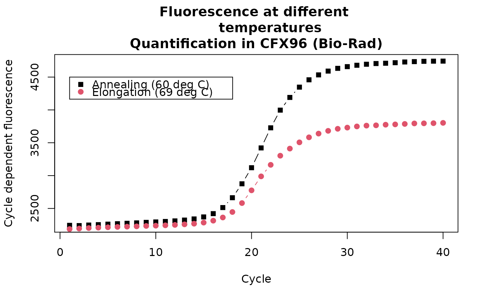

VIMCFX96_69.RdData set of an amplification reaction using the Bio-Rad CFX96 thermo cycler. The samples of Vimentin were amplified in the CFX96 as replicates according to Roediger et al. (2013). The quantification was performed during the elongation step (69 degrees Celsius).
data(VIMCFX96_69)
A data frame with 40 observations on the following 97 variables. The first column ("Cycle") contains the number of cycles and consecutive columns contain the replicates ("A1" to "H12").
Stefan Roediger, Claudia Deutschmann (BTU Cottbus - Senftenberg)
A Highly Versatile Microscope Imaging Technology Platform for the Multiplex Real-Time Detection of Biomolecules and Autoimmune Antibodies. S. Roediger, P. Schierack, A. Boehm, J. Nitschke, I. Berger, U. Froemmel, C. Schmidt, M. Ruhland, I. Schimke, D. Roggenbuck, W. Lehmann and C. Schroeder. Advances in Biochemical Bioengineering/Biotechnology. 133:33--74, 2013.
data(VIMCFX96_60) data(VIMCFX96_69) T60 <- rowMeans(VIMCFX96_60[, 2:ncol(VIMCFX96_60)]) T69 <- rowMeans(VIMCFX96_69[, 2:ncol(VIMCFX96_69)]) plot(1:length(T60), T60, main = "Fluorescence at different temperatures\nQuantification in CFX96 (Bio-Rad)", xlab = "Cycle", ylab = "Cycle dependent fluorescence", pch = 15, type = "b")